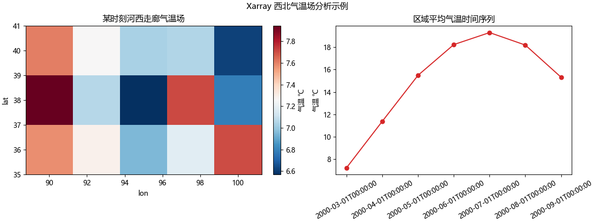

备注
Go to the end to download the full example code.
Xarray 西北气温场分析#
本章目标：用 Xarray 读取 NetCDF 再分析气温场，对其进行时间切片、 空间子区域裁剪，并做纬度加权区域平均，最后画出「某时刻空间气温场 + 区域平均时间序列」两张图，贯穿项目第 8 步。
真实项目中第一步是：
import xarray as xr ds = xr.open_dataset("northwest_temp.nc")
用 open_dataset 读取项目数据文件（NetCDF），它会自动解析 time/lat/lon
坐标、识别缺测 _FillValue。为了保证本画廊在不联网、无人造数据文件的
环境下也能直接复现，下面用 numpy 在脚本内合成一张覆盖中国西北
（lon ≈ 85–105°E，lat ≈ 32–42°N）的温度场，其余分析流程与读取 NetCDF
完全一致——把 da_synth 换成 ds["temp"] 即可无缝迁移。
---------- ① 导入库 + 中文字体配置 ----------
import numpy as np
import matplotlib.pyplot as plt
plt.rcParams["font.sans-serif"] = ["Microsoft YaHei", "SimHei"] # 中文字体
plt.rcParams["axes.unicode_minus"] = False # 负号正常显示
---------- ② 构造 DataArray：显式给出 coords + dims + attrs ---------- 覆盖中国西北：lon 85–105°E，lat 32–42°N
lon = np.arange(85.0, 105.01, 2.5) # 步长 2.5°，共 9 个经度格点
lat = np.arange(32.0, 42.01, 2.0) # 共 6 个纬度格点
n_m = 12 # 12 个时次（模拟 2000 年的逐月）
time = np.arange("2000-01-01", "2001-01-01",
dtype="datetime64[M]").astype("datetime64[D]")
# 物理：温度 = 年均基础 + 季节项(纬向+时间) + 纬度经向订正 + 小噪声，单位 K
base = 275.0 + 12 * np.cos(np.radians(lat))[:, None] # 纬度加热
season = 8 * np.cos(2 * np.pi * (np.arange(n_m) - 6) / 12.0) # 7 月最热、1 月最冷
monthly = base[None, :, :] + season[:, None, None] # (time, lat)
grad = -0.02 * (lon - 95.0) # 西暖东略冷 (lon,)
rng = np.random.default_rng(2026)
noise = rng.normal(0, 0.3, size=(n_m, len(lat), len(lon))) # 观测噪声
data_k = monthly + grad + noise # 单位 K
import xarray as xr # noqa: E402
da_synth = xr.DataArray(
data=data_k,
dims=["time", "lat", "lon"],
coords={"time": time, "lat": lat, "lon": lon},
name="temp",
attrs={"long_name": "2m 空气温度", "units": "K", "source": "合成演示数据"},
)
print("构造完成 shape(time, lat, lon):", da_synth.shape)
# 开尔文 → 摄氏度（后续绘图用 ℃）
da_c = da_synth - 273.15
da_c.attrs["units"] = "degC"
构造完成 shape(time, lat, lon): (12, 6, 9)
---------- ③ 时间切片：只保留 2000 年 3–9 月（暖半年）----------
da_season = da_c.sel(time=slice("2000-03-01", "2000-09-01"))
print("时间切片后 shape:", da_season.shape)
时间切片后 shape: (7, 6, 9)
---------- ④ 空间子区域裁剪：聚焦甘肃河西走廊一带 ---------- lon 90–100°E, lat 35–40°N（本例 lat 从小到大排列，故 slice(35, 40)）
da_region = da_season.sel(lon=slice(90, 100), lat=slice(35, 40))
print("空间裁剪后 shape:", da_region.shape)
空间裁剪后 shape: (7, 3, 5)
---------- ⑤ 纬度加权区域平均（气象核心，禁止算术平均）---------- 球面格点面积正比于 cos(lat)，高纬格点面积更小，直接平均会造成系统偏差
lat_weight = np.cos(np.radians(da_region.lat))
series = da_region.weighted(lat_weight).mean(dim=["lat", "lon"])
print("纬度加权区域平均时间序列维度:", series.shape)
print("区域平均气温(℃)序列前 5 个时次:")
print(series.values[:5])
纬度加权区域平均时间序列维度: (7,)
区域平均气温(℃)序列前 5 个时次:
[ 7.22320734 11.37567454 15.48801948 18.23143718 19.303809 ]
---------- ⑥ 绘图：左=某时刻空间气温场，右=区域平均时间序列 ----------
fig, (ax1, ax2) = plt.subplots(1, 2, figsize=(12, 4.5),
layout="constrained")
# 左图：取裁剪区域内第 0 个时次的空间场（lat, lon）
da_region.isel(time=0).plot(ax=ax1, cmap="RdBu_r",
cbar_kwargs={"label": "气温 ℃"})
ax1.set_title("某时刻河西走廊气温场")
# 右图：纬度加权区域平均的时间序列
ax2.plot(series.time.astype(str), series.values, marker="o", color="tab:red")
ax2.set_title("区域平均气温时间序列")
ax2.set_ylabel("气温 ℃")
ax2.tick_params(axis="x", rotation=30)
fig.suptitle("Xarray 西北气温场分析示例")

Text(0.5, 0.99074, 'Xarray 西北气温场分析示例')
保存示例图片（sphinx-gallery 环境可观察输出）
import os # noqa: E402
out_png = "plot_xarray_field.png"
if not os.path.exists("figures"):
os.makedirs("figures", exist_ok=True)
fig.savefig(os.path.join("figures", out_png), dpi=120, bbox_inches="tight")
print("已保存示例图: figures/" + out_png)
# 关键结果打印，便于校验
print("区域平均气温变化范围 (℃):", float(series.min()), "~", float(series.max()))
已保存示例图: figures/plot_xarray_field.png
区域平均气温变化范围 (℃): 7.223207343963123 ~ 19.303808999423243
Total running time of the script: (0 minutes 1.180 seconds)